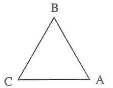
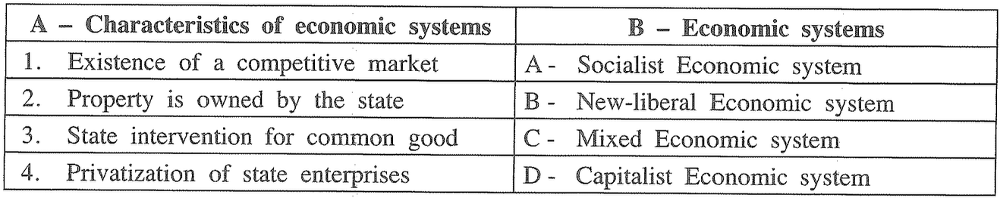

SVUM Education Platform
Civic Education 2020
Number of Questions:
40 |
Time:
Min 60 |
Marks:
1 point per question
Time Left:
60:00
Progress:
0%
1. According to G.D.H. Cole's definition, the opportunity for developing one's personality sans external resistance is
rights.
equality.
freedom.
justice.
2. What is the concept that refers to the implementation of decision arrived at through the consent of the parties in order to resolve a conflict?
Arbitration
Bargaining
Inquiry
mediation
3. If there are people of different cultures living in unity in a society that society is called
A multi-religious society.
A multi-cultural society.
A multi-ethnic society.
A multi-national society.
4. Governing a country through people's representatives is
direct democracy.
indirect democracy.
people's democracy.
civic democracy.
5. Sri Lanka's supreme law is
civil law.
human right law.
constitutional law.
criminal law.
6. What is the payment for entrepreneurship as a factor of production?
Wage
Rent
Interest
Profit
7. What is the human right to which the right to peaceful assembly is included?
Religious rights
Cultural rights
Political rights
Economical rights
8. The two main techniques employed in production are
capital intensive and labour intensive.
the state intensive and private intensive.
technology intensive and capital intensive.
consumer intensive and trade intensive.
9. The legal duty of citizens in a democratic society is
respecting traditions.
ethical behaviour.
acting according to religion.
protecting public property.
10. What are the services provided by environment for human survival?
Services of protecting social environment
Garbage absorb services
Natural disaster managing services
Services of ensuring protection
11. Conflicts that occur within and among individuals are called
personal conflicts.
social conflicts.
intricate conflicts.
family conflicts.
12. Who is the officer who assists the Attorney General?
Inspector General of Police
Chief Justice
Minister of Justice
Solicitor General
13. The head of a Municipal Council in Sri Lanka is
mayor.
Chief Secretary.
Chairman.
Commissioner.
14. The power of appointing the chief minister of a Provincial council is with
President
Governor
Leader of the party
Chairman of the Election Commissioner
15. What is the higher court to which a decision of a primary magistrate court can be appealed?
Court of appeal
Supreme Court
District Court
Provincial High Court
16. The geographical factor that has contributed make Sri Lanka a multi-cultural society is
being a South Asian country.
being located in the middle of Indian ocean.
having a coast suitable for tourists.
location of a natural harbour in Trincomalee.
17. Select the option contains only the environmental problems caused by natural phenomena
earthquakes, droughts, volcanoes
landslips, tornado, air pollution
earthquakes, floods, water pollution
storms, deforestation, wild fire
18. Modern states with democratic governments strive for
coordinating communication services.
affirming democratic principles.
confirming globalization goals.
building the nation within cultural diversity.
19. What is the organization established by the United States after the second world war in partnership with European countries?
BIMSTEC
ASEAN
NATO
UNESCO
20. In what category of conficts does the ethic confict which was existed for 30 years in Sri Lanka belong to?
Personal conflicts
Social conflics
Religious conflicts
Economical conflicts
21. What is the permanent member country of the UN Security Council which holds the power of veto?
France
Canada
Japan
Germany
22. What is the name of the supreme governing body of the Greek city-state?
Senate
Executive council
Citizens' council
Governing council
23. The sovereignty of a state rests with
the Executive.
the Parliament.
the Judiciary.
the people.
24. What is the answer which indicates one of the main aspects of maintaining international relations?
Cultural strategic relations
Military strategic relations
Political strategic relations
Religious strategic relations
25. An important feature introduced to Sri Lanka by the 1978 constitution for the first time is
the Post of Governor General.
the Legislative Council.
the Elections Commission.
the Executive Presidential system.
26. What is the power of Central Government indicated in the Reserved List of 13" amendment to the 1978 constitution?
National Housing and Construction
Census and Statistics
Social Service and Rehabilitation
Agriculture and Agrarian Services
27. Select the answer which contains the components that are used in calculating the Human Development Index.
Per Capita Income adjusted by the purchasing power, Education, Life expectancy at birth
Per Capita Income adjusted by the purchasing power, Gross Domestic Product, Maternal mortality ratio
Per Capia income adjusted by the purchasing power, infant mortality ratio, Net National product
Per Capita Income adjusted by the purchasing power, Foreign debt ratio, Adult literacy.
28. What is the most influential reason for cultural blending in the modern world?
Geographical location of countries
Expansion of trade relations
Subjugation to Western countries
Becoming a global village
29. Galtun's triangular struggle conflict model is shown below.

What is the option which indicates A, B and C respectively in this?
Behaviour, Attitudes, Beliefs
Behaviour, Context, Attitudes
Attitudes, Context, Habits
Context, Environment, Relationships
30. The right of the people, above a certain age, to elect their rulers is called
universal franchise
sovereign franchise.
proportional voting.
delegative voting.
31. The members of the American Senate are appointed by
the president
the federal judiciary.
the voters of states
the congress.
32. Select from the following statements which is not a workers' right.
Working in accordance with the goals of the institution.
Working in an eight hour service duration.
The ability to obtain leave.
Obtaining the job security.
33. A country that exists a federal system of government is
Great Britain
Sri Lanka.
Russia.
Switzerland.
34. A factor necessary for the success of a democratic system of government is
existence of the supremacy of law.
ability to present people's problems
eradication of poverty.
strengthening foreign relations.
35. In which of the following system of elections, giving voters freedom to express their political opinoin without any undue influence, is a basic feature?
a peaceful election
a free election
a national election
pro-people election
36. A public health service entrusted to local goverment bodies in Sri Lanka is
maintaining public bathing places.
laying pipes for cleaning services.
maintainging playgrounds.
improving hygenic conditions of people.
37. What is the concept which describes the human rights guaranteed in the Sri Lankan constitution?
Social rights
People's right
Fundamental rights
Civil rights
38. Select a negative impact of globalization on Sri Lanka.
Increasing brain-drain
Diversification of the economy
Balancing the trade deficit
Inflow of new technology
39. Part A indicates the characteristics of different economic systems and part B the names of the economic systems.

What if the, correct order of Economic systems when column 'B' is matched according to the order of Column 'A'?
CADB
CDAB
DABC
DACB
40. Consider the statements 'A' and 'B' given below.
A - Good governance leads to a system of public administration without vice and corruption.
B - Media freedom is ensured in every democratic state.
Out of these statements,
Statement A explains statement B.
Both Statements A and B are correct.
Statement A is incorrect and B is correct.
Statement A is correct and B is incorrect.
Submit Answers